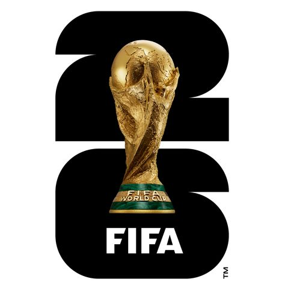
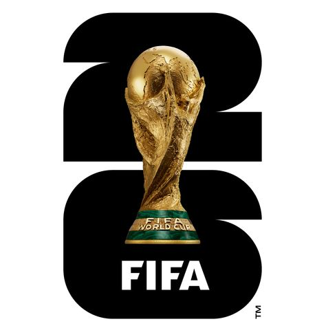

1. Which club has won the most UEFA Champions League/European Cup titles?
(Easy)
1 of 10 Questions
2. Who is the all-time top scorer in Champions League history? (Easy)
2 of 10 Questions
3. Which team completed the first treble (League, Cup, Champions League) in men's football?
(Medium)
3 of 10 Questions
4. Which player has the most Champions League assists in history? (Medium)
4 of 10 Questions
5. Which goalkeeper holds the record for most clean sheets in Champions League history?
(Medium)
5 of 10 Questions
6. Which team has the longest unbeaten home record in Champions League history?
(Hard)
6 of 10 Questions
7. Who scored the fastest Champions League goal in history? (Hard)
7 of 10 Questions
8. Which player has won the most Champions League titles? (Hard)
8 of 10 Questions
9. Which team achieved the biggest win in Champions League history?
(Impossible)
9 of 10 Questions
10. Who is the youngest goalscorer in Champions League history? (Impossible)
10 of 10 Questions

 
